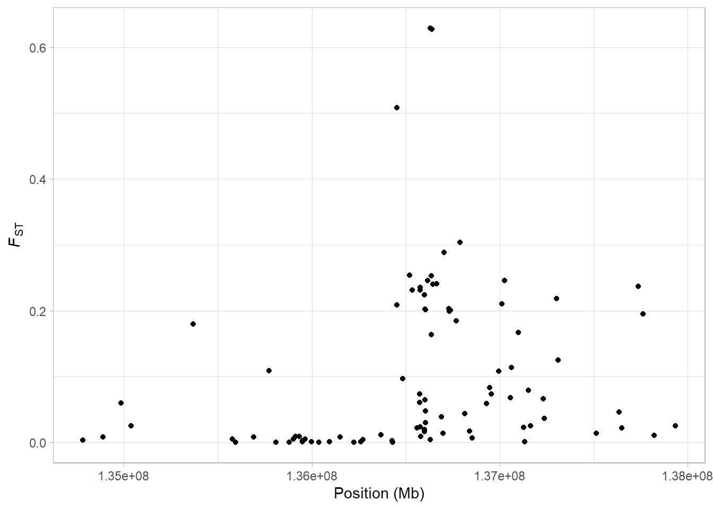
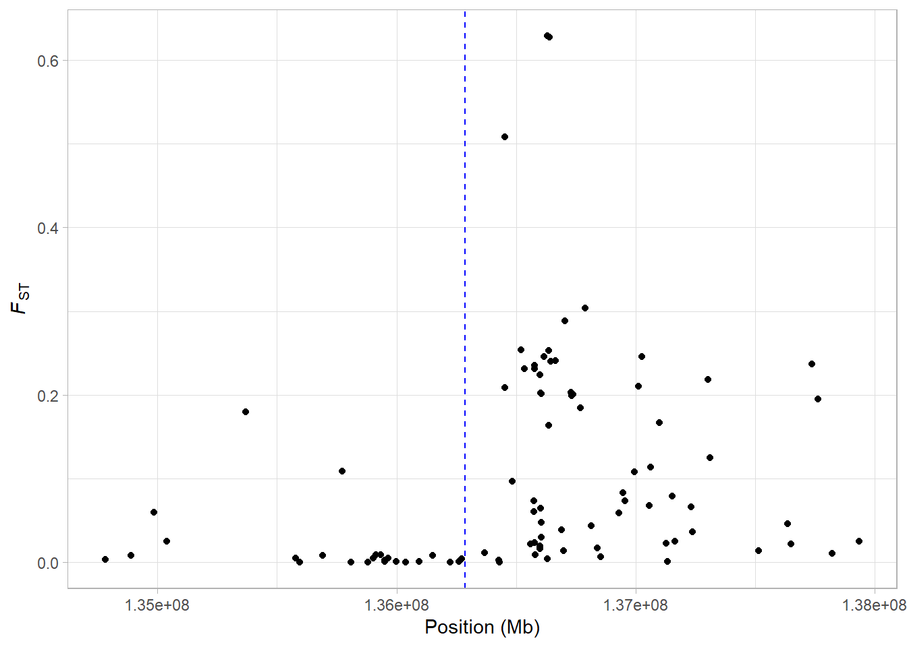
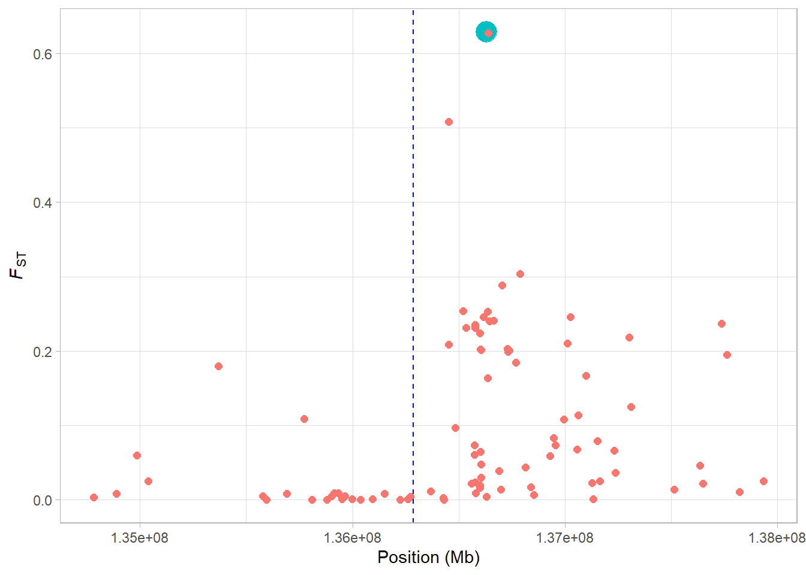
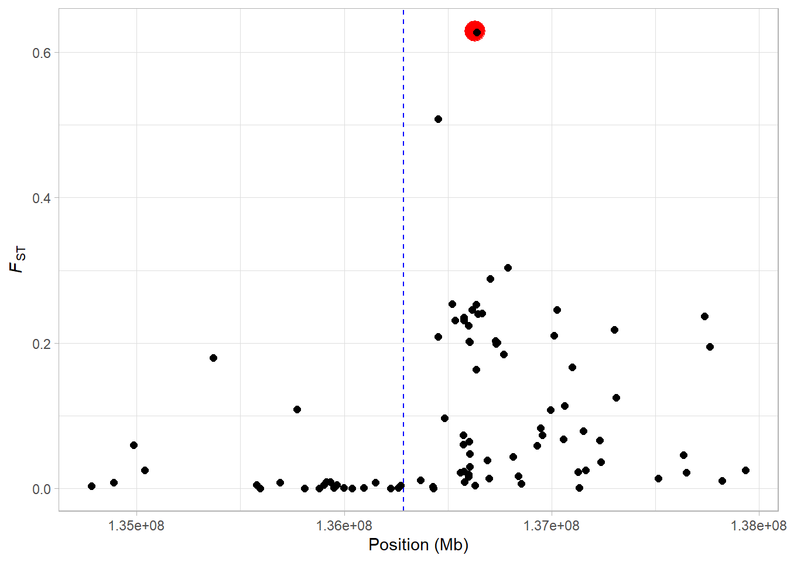
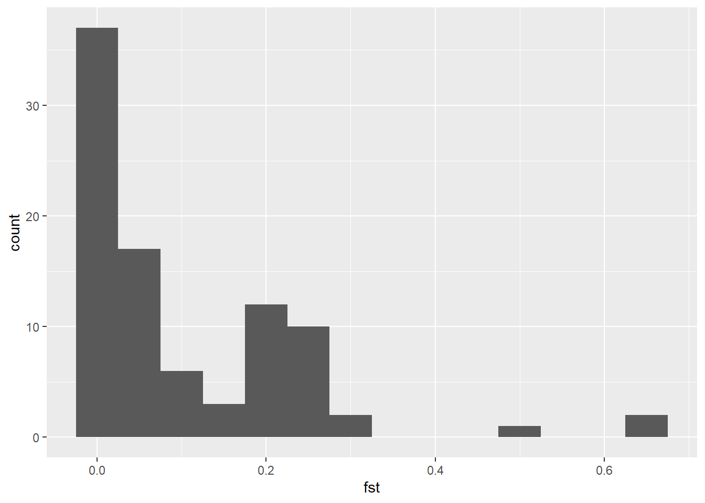
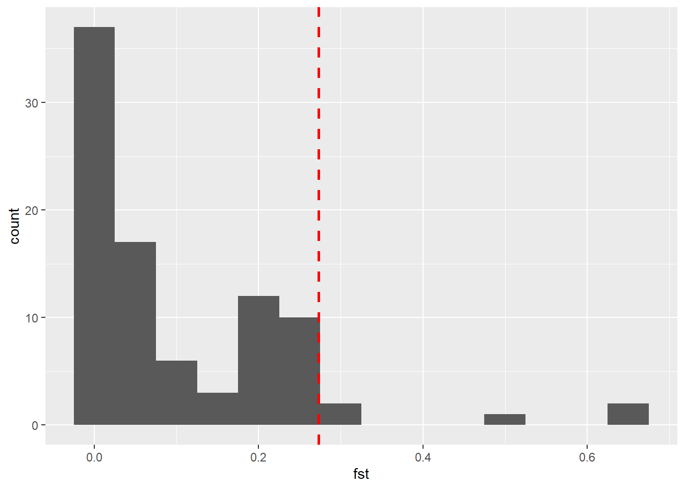
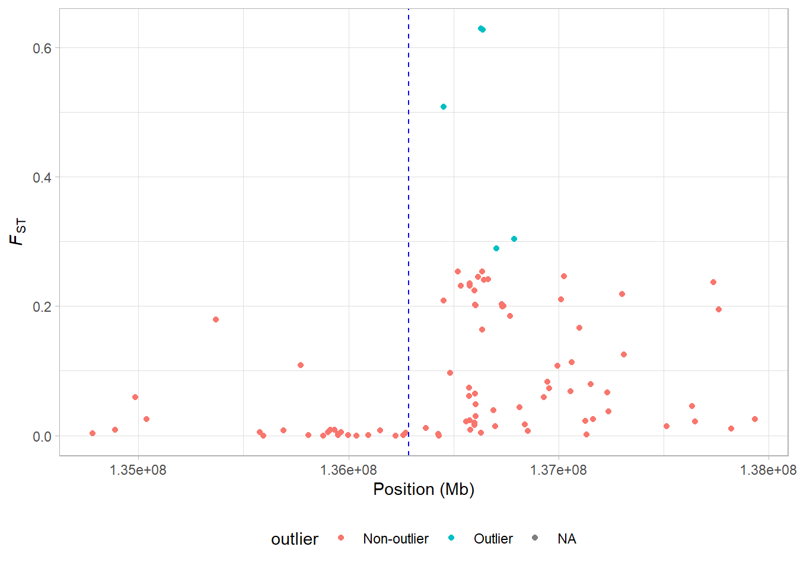

5.2 Evolutionary biology: FST
5.2.1 Understanding FST - the fixation index
5.2.1.1 What is FST?
FST, also known as the fixation index, is an extremely important statistic in population genetics, molecular ecology and evolutionary biology. It is also arguably one of the most famous population genetic statistics you will encounter. F~ST essentially measures the level of genetic differentiation between two or more populations. It ranges from 0 (i.e. no genetic differentiation) to 1 (complete genetic differentiation)
Ultimately, it is quite a simple statistic to understand but it can sometimes take time to properly grasp. So we will go over the basics properly here. One of the most confusing things about F~ST is that are several different ways to define it. For ease of undersanding, we will use a simple formulation:
\(F_{ST} = \displaystyle \frac{H_T - H_S}{H_T}\)
For simplicity, imagine we are examining two populations only. With this formulate, \(H_T\) is the expected heterozygosity when the two populations are considered as one large meta-population. \(H_S\) is the average expected heterozygosity in the two populations.
You might be thinking, hang on a minute… what do we mean by expected heterozygosity? To appreciate this, we need to think back to the Hardy-Weinberg expectation we learned about in Chapter 3. Remember that at a simple bi-allelic locus, \(p\) and \(q\) are the frequencies of the two alleles. We can calculate the expected frequency of heterozygotes with \(2pq\) - this is the expected heterozygosity.
5.2.1.2 A worked example of FST in humans
As an illustrative example, we will calculate FST for the SNP rs4988235 associated with lactase persistence in humans. This SNP is located ~14 Kb upstream of the LCT gene on Chromosome 2 and is biallelic for C/T; a T at this position is strongly associated with the ability to digest milk in adulthood. We sample 80 people each from two populations which differ in the frequency of lactase persistence - Americans of European descent and Druze people from Israel. The counts of genotypes are shown in the table below. Note that these data are modified from Bersaglieri et al. 2002.
| Population | TT | CT | CC |
|---|---|---|---|
| American | 48 | 28 | 4 |
| Druze | 0 | 3 | 77 |
Knowing these numbers, we will first calculate the allele frequences in each population. We will use \(p\) to denote the frequency of the T allele at this locus.
# set up genotype counts
a <- c(48, 28, 4) # americans
d <- c(0, 3, 77) # druze
# get the number of people sampled (same for both)
n <- sum(a)
# calculate the frequency of the T allele - or p
# for americans
p_a <- ((a[1]*2) + a[2])/(2*n)
# for druze
p_d <- ((d[1]*2) + d[2])/(2*n)
# calculating the frequency of C (or q) is then trivial
q_a <- 1 - p_a
q_d <- 1 - p_dNext we can calculate the allele frequencies for the metapopulation - i.e. Americans of European descent and Druze considered as a single population. This is as simple as taking the mean of the two allele frequencies.
# calculate total allele frequency
p_t <- (p_a + p_d)/2
q_t <- 1 - p_tWith these allele frequencies calculated, we can very easily calculate expected heterozygosities - remember this is just \(2pq\).
# first calculate expected heterozygosity for the two populations
# americans
hs_a <- 2*p_a*q_a
# druze
hs_d <- 2*p_d*q_d
# then take the mean of this
hs <- (hs_a + hs_d)/2
# next calculate expected heterozygosity for the metapopulations
ht <- 2*p_t*q_tWith all the relevant expected heterozygosities in place, we are now ready to calculate FST which we can do like so:
# calculate fst
fst <- (ht - hs)/htIf your calculations were correct, then you should have an FST estimate of 0.59 - this is very high for between two human populations. One way to interpret the FST value we have here is that 59% of genetic variance we observe differs between populations. Since population can explain such a large difference in this case, we might expect selection to be responsible…
5.2.1.3 Writing a set of FST functions
The code in the previous section was useful to demonstrate how we can calculate FST, but it would be a lot of work to run through this every single time we want estimate the statistic for a locus. This being R, we can of course easily create a function that will do all of the leg work for us! We will take the code we wrote out in the last section and use it here to write two functions that we can use when we want to calculate FST. Note that for simplicity, we will only write functions that work for two populations.
First, we will write a function called calc_af which will take genotype counts from a population and calculate allele frequencies. This will probably be similar to the function you made in last week’s assignment.
# a simple function to calculate allele frequencies in two populations
calc_af <- function(counts){
# get the number of samples
n <- sum(counts)
# calculate frequency of 1st allele - p
p <- ((counts[1]*2) + counts[2])/(2*n)
return(p)
}Since it is very straightforward for use to calculate the frequency of the second allele once we have the frequency of the first (i.e. \(q = 1- p\)), our calc_af function will only calculate \(p\) for both populations. Let’s test it on the data from our previous example.
# testing our function on the american/druze example
af_american <- calc_af(c(48, 28, 4))
af_druze <- calc_af(c(0, 3, 77))So now that we have a function that calculates allele frequencies in the two populations, we can write our calc_fst function to take these frequencies and calculate FST from them.
# a function to calculate fst
calc_fst <- function(p_1, p_2){
# calculate q1 and q2
q_1 <- 1 - p_1
q_2 <- 1 - p_2
# calculate total allele frequency
p_t <- (p_1 + p_2)/2
q_t <- 1 - p_t
# calculate expected heterozygosity
# first calculate expected heterozygosity for the two populations
# pop1
hs_1 <- 2*p_1*q_1
# pop2
hs_2 <- 2*p_2*q_2
# then take the mean of this
hs <- (hs_1 + hs_2)/2
# next calculate expected heterozygosity for the metapopulations
ht <- 2*p_t*q_t
# calculate fst
fst <- (ht - hs)/ht
# return output
return(fst)
}Let’s test our function on the allele frequencies we calculated with our calc_af function.
# testing our function on the american/druze example
calc_fst(af_american, af_druze)This should be the same as you got before, but with a lot less work. Next, we’ll look at applying a function to a bigger dataset with apply().
5.2.1.4 Applying functions to matrices and data frames
Extending our LCT and lactase persistence example, let’s get some data from multiple human populations. You can download the data here
Import the data into R using the read.table() function. If you’re unsure about how you do this, remember that you can go back and check in the tutorial from the first week
Show hint
The data is separated by tabulator ("\t"), and has a header.
lct_counts <- read.table("lct_count.tsv", header = TRUE, sep = "\t")You should now have a data frame in your R environment with allele counts for the SNP rs4988235 for 53 populations. Again, these data are all from Bersaglieri et al. 2002.
What we have is the counts of allleles but what we actually want is the allele frequency for T - that is how we can calculate FST. We can use our calc_af() function for this, so let’s try this function out on counts for a single population. We use indexing here to select the first row and only columns 2:4, since our function is only expecting the count data, not the population name.
calc_af(lct_counts[1, 2:4])Great! So this works well. Now let’s get \(p\) (the frequency of the T allele) for all the populations. We can do this extremely fast and easily using the apply() function that you learned about in the R-section. Note that the data needs to be columns 2 through 4 of the data, and the second argument needs to be 1 since we’re working on rows.
p <- apply(lct_counts[,2:4], 1, calc_af)We can now combine our vector of allele frequencies with the population names to create a data.frame of frequencies. Like so
lct_freq <- data.frame(pop = lct_counts$pop, p)Now we can easily calculate a pairwise FST with our calc_fst function. For example, let’s calculate FST for European Americans and East Asians. We will use dplyr commands for this. First we make subsets of the data with filter(). We then end up with a single row of our data. We provide the p-column of that subset to calc_fst using $21.
# extract frequencies
af_euram <- filter(lct_freq, pop == "European_American")
af_eastasian <- filter(lct_freq, pop == "East_Asian")
# calculate fst
calc_fst(af_euram$p, af_eastasian$p)As with our previous example, we can see FST is actually pretty high between these populations for this SNP. What about if we compared East Asians with the Bedouin people from Israel?
# extract frequencies
af_bedouin <- filter(lct_freq, pop == "Bedouin_Negev_Israel")
# calculate fst
calc_fst(af_eastasian$p, af_bedouin$p)Here we see FST is substantially lower. Allele frequency differences are lower between these populations.
5.2.2 Visualising FST along a chromosome
Next, we will combine vectorisation and our custom functions to calculate FST for a series of SNPs in the vicinity of the LCT gene on chromosome 2. This is essentially a genome scan, an approach that can be used to detect signatures of selection in the genome. You can download the data here
Read in the file LCT_snps.tsv.
lct_snps <- read.table("LCT_snps.tsv", header = TRUE, sep = "\t")This data is also from from Bersaglieri et al. 2002. It is the allele frequency in various human populations for one allele at a set of 101 biallelic SNP markers close to the LCT gene on chromosome 2 in the human gene. Each row is a SNP and there are three frequencies - one for North Americans of European descent, one for African Americans and one for East Asians.
Since we have the allele frequencies, we can easily calculate FST for each of these SNPs. For our example here, we will do this between european_americans and east_asians. First of all, let’s use our calc_fst function on just a single SNP.
calc_fst(lct_snps[1, "european_americans"], lct_snps[1, "east_asians"])So it works great for a single row. Actually, calc_fst() will work with vectors of values as well, so to calculate the FST for all loci simultaneously, we can supply the entire columns as arguments with the $ operator.
calc_fst(lct_snps$european_americans, lct_snps$east_asians)It works equally great for the entire data set! Let’s add these FSTs as a column in the lct_snps data frame.
# make an fst column
lct_snps$fst <- calc_fst(lct_snps$european_americans, lct_snps$east_asians)Now that we have FST estimates for each of our SNPs, we can visualise the variation along the chromosome with ggplot2.
a <- ggplot(lct_snps, aes(coord, fst)) + geom_point()
a <- a + xlab("Position (Mb)") + ylab(expression(italic(F)[ST]))
a <- a + theme_light()
a
What are we seeing here? Quite clearly, there is a an increase in FST along the chromosome, with a few SNPs showing extremely high values. It might make things a bit clearer if we mark on our plot the midpoint of the LCT gene. We know the gene occurs between 136,261,885 bp and 136,311,220 bp on Chromsome 2 (from the UCSC Genome Browser). So first we will find the midpoint of the gene.
# define the start and stop positions of the gene
lct_start <- 136261885
lct_stop <- 136311220
# calculate the midpoint
lct_mid <- (lct_start + lct_stop)/2All we need to do to add it to our plot is add the geom_vline() geom.
a <- a + geom_vline(xintercept = lct_mid, lty = 2, col = "blue")
a
When the mid point of the gene is marked, it is clear that there is an increase in FST just upstream from the LCT gene. Perhaps we want to highlight the SNP that we calculated FST for in our first example?
This is a perfect opportunity to use the ifelse() function we learned about in Section 5.1.3. We can make a new column in our data based on whether or not lct_snps$snp_id is exactly equal to “rs4988235”.
Exercise: add a column named status to lct_snps using ifelse(). The column should contain “Yes” if the id is rs4988235, and “No” if it’s not.
Show hint
Start with lct_snps$status <- to assign the result to a new column.
Show another hint
The logical statement you need to use is lct_snps$snp_id == "rs4988235"
lct_snps$status <- if_else(lct_snps$snp_id == "rs4988235", "Yes", "No")Now to highlight the SNP on our plot. We can make it big and colored this by mapping it to both the col and size aesthetic.
a <- ggplot(lct_snps, aes(coord, fst, col = status, size = status)) + geom_point()
a <- a + xlab("Position (Mb)") + ylab(expression(italic(F)[ST]))
a <- a + geom_vline(xintercept = lct_mid, lty = 2, col = "blue")
a <- a + theme_light() + theme(legend.position = "none")
a
Now we see, our focal SNP is highlighted in the plot. We’ll change the colours to make it a little bit clearer.
a + scale_colour_manual(values = c("black", "red"))
In the next section, we’ll demonstrate how we can use the distribution of FST to identify outliers as potential targets of selection.
5.2.2.1 Identifying outliers in our FST distribution
How can we identify outliers in our FST data? First of all, we can look at the distribution of our data by making a histogram of fst.
ggplot(lct_snps, aes(fst)) + geom_histogram(binwidth = 0.05)
Now, it’s apparent that some values are way larger than the rest, but where do we set the threshold? One way to do it is to set some arbitrary value, and say that all values larger than this should be considered outliers. This can for instance be that we mark the highest 5% as outliers. In R, we can get this value with the quantile() function.
In the following example, we make a vector of numbers from 0 to 100, and use the quantile function to find the highest 5% (or lowest 95%).
x <- 0:200
quantile(x, 0.95)
#> 95%
#> 190The function returns 190, which means that 95% of the values are below 190, and 5% of the values are above 190 (which shouldn’t be all that surprising).
Now we use the quantile() function on our data to set the outlier threshold. Note that this time we need to add na.rm = T in order to ignore some loci which have no FST estimates.
# set threshold
threshold <- quantile(lct_snps$fst, 0.95, na.rm = T)
# plot histogram with threshold marked
a <- ggplot(lct_snps, aes(fst)) + geom_histogram(binwidth = 0.05)
a + geom_vline(xintercept = threshold, colour = "red", lty = 2, size = 1)
Now what if we want to visualise this on our chromosome-wide plot? Once again, we need to use the ifelse() function.
lct_snps$outlier <- ifelse(lct_snps$fst > threshold, "Outlier", "Non-outlier")Take a look at the lct_snps data frame - you should now see an additional column which is a character vector with the status of each locus as either outlier or non-outlier. Next we can incorporate this into our plotting:
a <- ggplot(lct_snps, aes(coord, fst, colour = outlier)) + geom_point()
a <- a + xlab("Position (Mb)") + ylab(expression(italic(F)[ST]))
a <- a + geom_vline(xintercept = lct_mid, lty = 2, col = "blue")
a <- a + theme_light() + theme(legend.position = "bottom")
a
So now our potential outlier SNPs are marked on the figure. There are only 5 of them but they all occur just upstream from the LCT locus.
We cannot say for certain that these SNPs have increased FST values because of selection - other processes such as genetic drift or demographic history (i.e. a bottleneck in one of the two populations) might be responsible. However, given our knowledge that LCT is involved in lactase persistence, we can at least hypothesise that this is the case.
One important point to note here is that the threshold we set to identify a SNP as being potentially under selection is entirely arbitrary. In a way this line of thinking forces us to think of selection acting in some binary way on some SNPs and not others. This is obviously not the case. Still, for SNP data like this an FST scan can be a very useful tool.
Tip: to better understand this code, try printing the objects
af_euramandaf_eastasian, as well as the columnsaf_euram$pandaf_eastasian$p. This way you can follow what the code is doing.↩︎